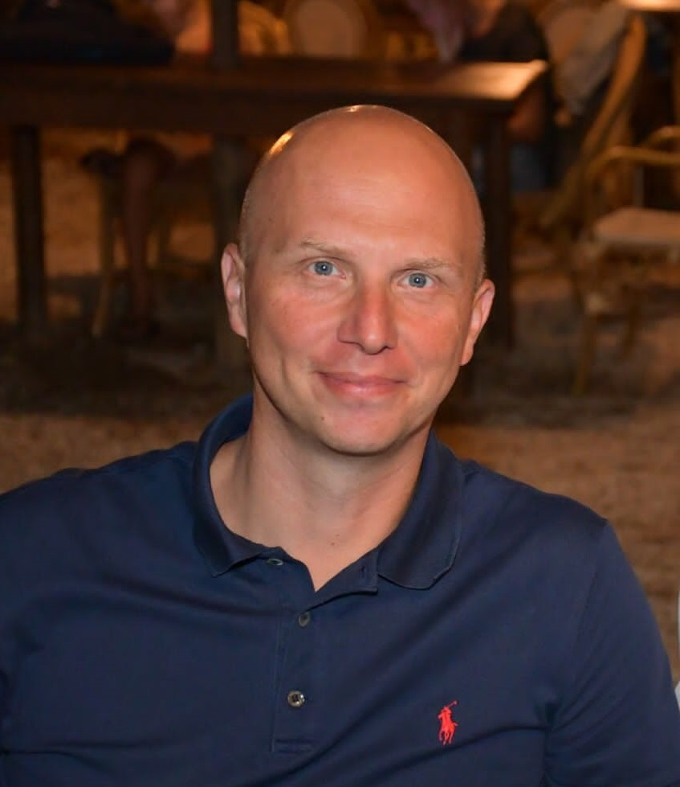

Robot mechanics
Geometric methods for kinematics and dynamics, whole-body motion, manipulation and control of complex robotic systems.
Applied mechanics · Robotics · Optimal control
I am an Associate Professor at the University of Pisa, working at the intersection of mechanics, geometry, optimisation and control—from humanoid robots to high-performance vehicles and advanced transmissions.

01 / Perspective
“I use the language of mechanics to turn complex motion into models we can understand, optimise and control.”
My research connects rigorous mathematical modelling with real engineering systems. The common thread is a geometric and computational approach to motion—whether the system is a dexterous hand, a humanoid, a racing vehicle or a hypoid gearset.
02 / Research directions
Geometric methods for kinematics and dynamics, whole-body motion, manipulation and control of complex robotic systems.
High-fidelity multibody models, minimum-lap-time planning and control strategies for high-performance and autonomous vehicles.
Trajectory optimisation, numerical optimal control and scalable computational methods for constrained dynamical systems.
Theory of gearing, contact analysis and optimisation of spiral bevel and hypoid gears, from geometry to performance.
03 / Recent work
A cross-section of recent work. For the complete and current record, visit Google Scholar or the University of Pisa research archive.
V. Palermo, M. Gabiccini, E. Grabovic, M. Guiggiani, M. Pergoli, L. Bergianti
View recordR. Mauceri, S. Dafarra, G. Romualdi, M. Gabiccini, D. Pucci
View recordM. Baracca, G. Simonini, S. Tolomei, Y. De Santis, P. Rosa Brusin, et al.
View recordM. Gulisano, E. Grabovic, A. Artoni, M. Gabiccini
View record04 / Teaching
University of Pisa · MSc
Kinematics, dynamics and control for students in Mechanical, Vehicle, and Robotics & Automation Engineering.
Course informationItalian Naval Academy
Interactive examples and learning resources for the Applied Mechanics course.
Open teaching laboratory05 / Background
Marco Gabiccini received his Laurea degree with honours and PhD from the University of Pisa in 2000 and 2006. During his doctorate he was a visiting scholar at The Ohio State University GearLab. He joined the Research Center “E. Piaggio” in 2006 and is now a faculty member of the Department of Civil and Industrial Engineering.
His work brings together applied mechanics, robotics and computation, with a long-standing interest in how geometry can clarify—and improve—the behaviour of complex machines.
2003–04Visiting Scholar, OSU GearLab
Since 2006Research Center “E. Piaggio”
IIND-02/AApplied Mechanics